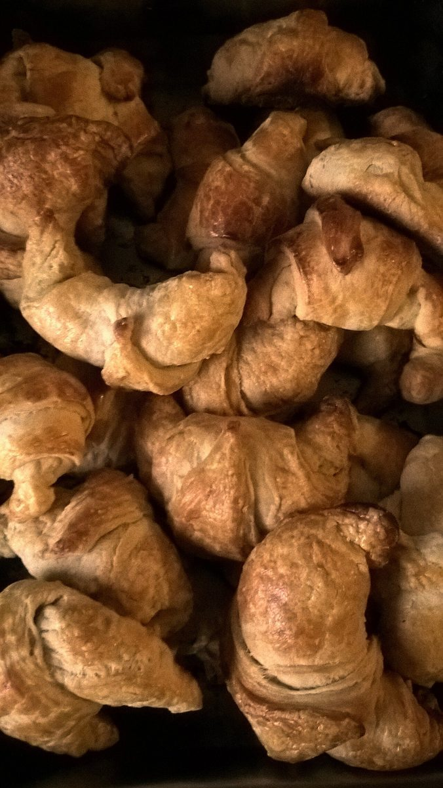
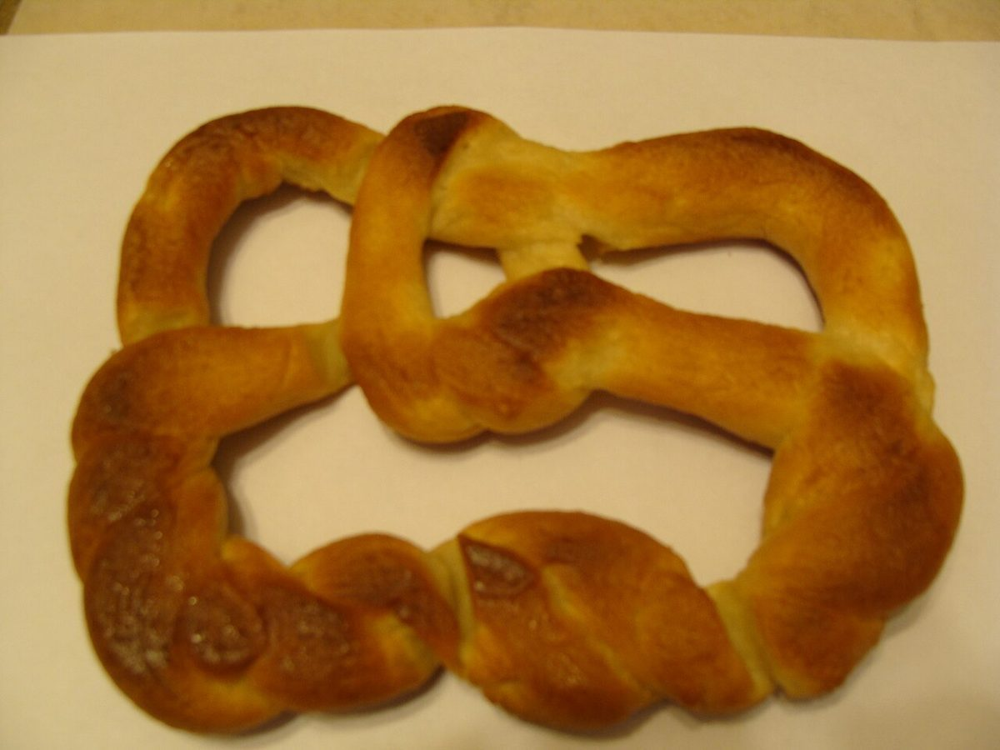
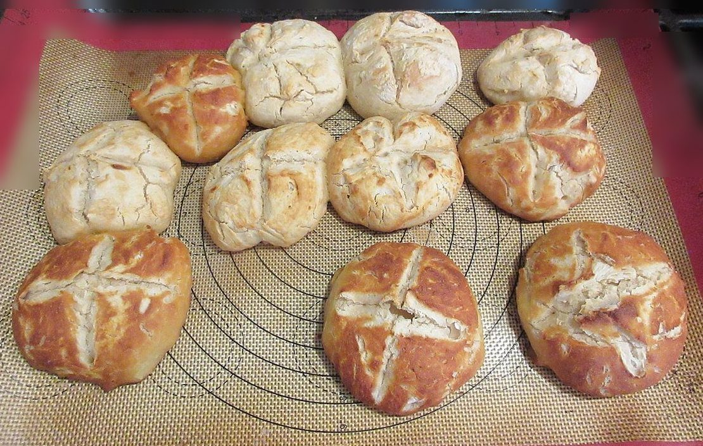
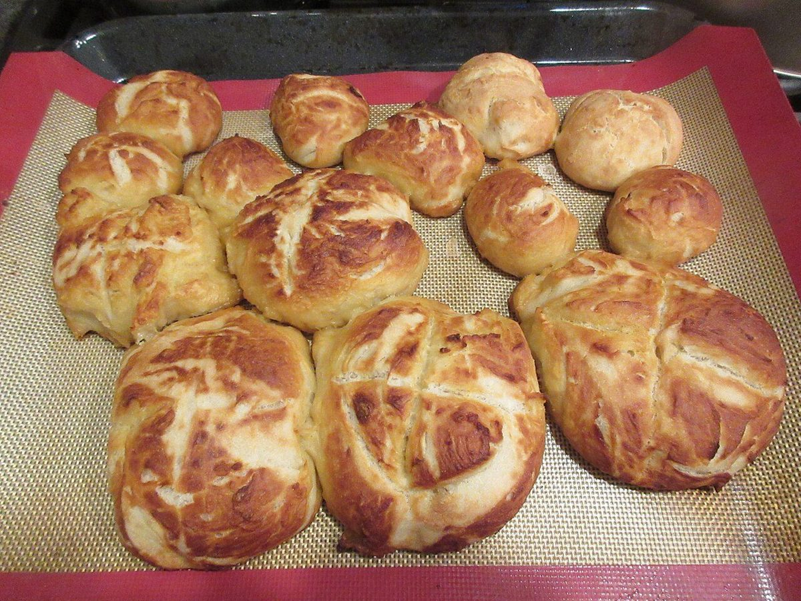
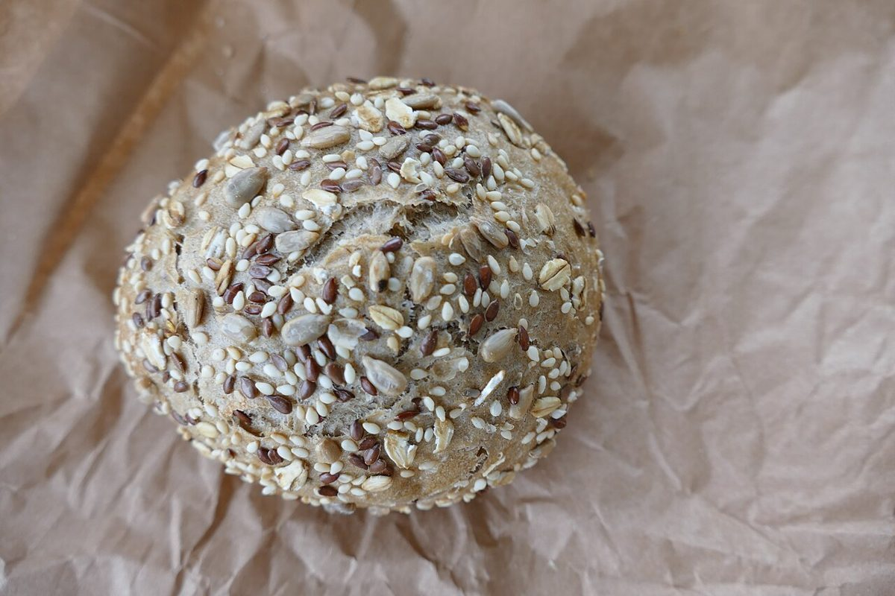
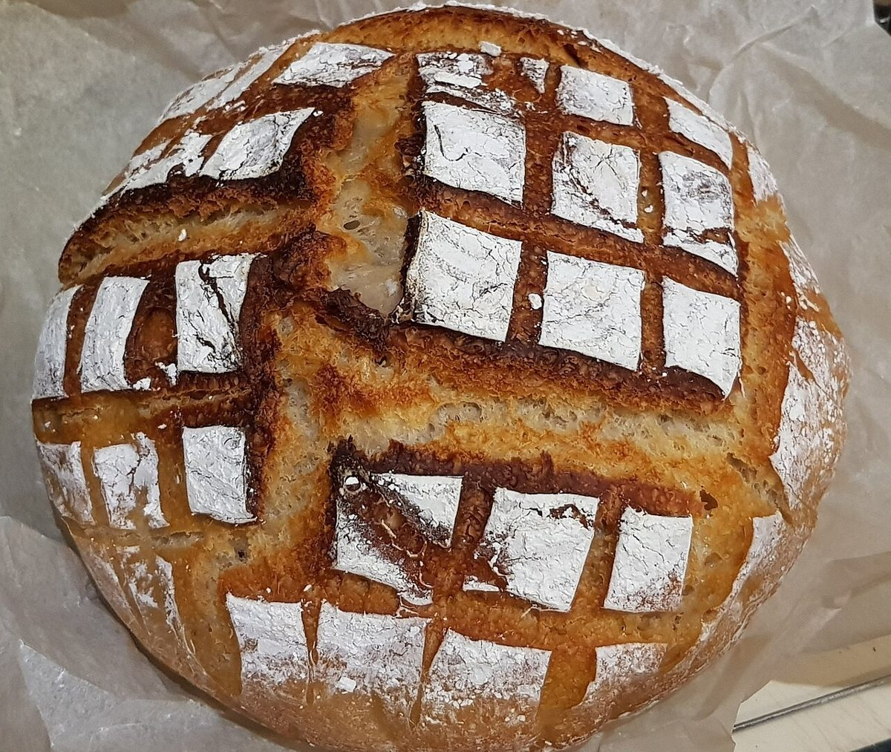

このページの写真はフリー素材のイメージです。実際の店内・商品の様子ではありません。実際の写真はお店ご提供のものに差し替えます。
きょうのパン
お店では、毎日60種類以上のパンが並ぶと案内されています。ここでは、パンのイメージを写真でご紹介します（実際の商品ではありません）。









- 商品ラインナップ
- 準備中
- 価格
- 準備中
- 営業時間・定休日
- 準備中
- 電話
- 準備中
お客様の声 イメージ例
以下は制作側が想像で作ったイメージ例で、実在のお客様の声ではありません。
イメージ例種類がたくさんあって、どれにするか迷う時間まで楽しいパン屋さん、という感想が届くようなお店をイメージしています。
イメージ例しっとり、もちっとした食感が好きで、つい多めに買ってしまう。そんな声を想像して書いたイメージです。
イメージ例団地のそばの小さなお店に、近所の人がふらりと立ち寄る。そんな日常の風景を想像した例文です。
お店のこと
手づくりパンの店 maru は、高槻市と茨木市の市境にある小さなパン屋です。2016年12月にオープンしたと、お店のInstagramで紹介されています。
味と食感を大切に、厳選した材料で作ったパンを、毎日60種類以上ご用意しているとのことです。
近くの提携駐車場（タイムズUR富田）が利用できると案内されています。
店名「maru」の由来は確認できていません。ページ全体のまあるい形のデザインは、制作側のイメージです。

アクセス
手づくりパンの店 maru〒569-0855 大阪府高槻市牧田町7−55−102
電話：準備中 / 営業時間・定休日：準備中
写真クレジット
- images/croissant-isolated.jpg「Croissant Isolated On White Background」 personalgraphic.official / CC0 1.0 / 出典
- images/croissant-ring.jpg「Croissant, whole」 SKopp / CC BY-SA 3.0 / 出典
- images/croissant-section.jpg「Croissant, cross section」 SKopp / CC BY-SA 3.0 / 出典
- images/croissants-pile.jpg「Croissants-3」 ViajeroExtraviado / CC0 1.0 / 出典
- images/roll-crumb.jpg「Bread roll with crumb hole, frontal view」 SKopp / CC BY-SA 3.0 / 出典
- images/baguette-cut.jpg「Baguette mie」 Popo le Chien / CC BY-SA 4.0 / 出典
- images/kaiser-roll.jpg「Kaiser roll」 Glane23 / CC BY-SA 3.0 / 出典
- images/pretzel-front.jpg「Front View of a Pretzel Swelled the Two Holes」 Brassluff / CC0 1.0 / 出典
- images/rye-loaf.jpg「Pan de centeno (de molde)」 Flipwared / CC BY-SA 4.0 / 出典
- images/bread-crumb-black.jpg「Sourdoughbreadcrumb.jpg」 Nleamy / CC BY 2.5 / 出典
- images/pretzel.jpg「Pretzel Knot」 Fadkins / CC BY-SA 3.0 / 出典
- images/rolls-tray.jpg「Pretzel rolls for US National Pretzel Day 2024 - On tray out of oven」 Infrogmation / CC BY-SA 4.0 / 出典
- images/rolls-tray2.jpg「Pretzel rolls on a tray, December 2023」 Infrogmation / CC BY-SA 4.0 / 出典
- images/seed-roll.jpg「Frühstückssemmel 08」 Kritzolina / CC BY-SA 4.0 / 出典
- images/sourdough-cob.jpg「Home made sourdough cob」 Fæ / CC BY-SA 4.0 / 出典


.jpg){kind=link}


全て Wikimedia Commons / Flickr のフリー素材（ライセンスは各リンク参照）。縮小のみ行っています。